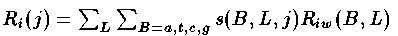
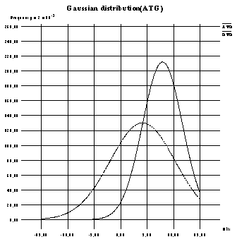
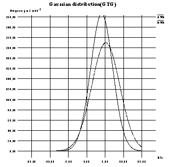

Two major signals on mRNA for translation initiation in E.coli are known, i.e. start codon, and Shine-Dalgarno sequence. E.coli has several kinds of start codons, i.e. AUG, GUG, and UUG. However, when start codons are GUG or UUG, translational efficiency is much less. In this case, strong Shine-Dalgarno sequence may restore the translational efficiency. By using unbiased start codons in the whole genome of E.coli, we have conducted the computational analysis of translation initiation sites to investigate whether Shine-Dalgarno sequences will be strong in case where the start codons are GTG. We have applied information theory for the accurate analysis. According to our results, there are many GTG start sequences with weak Shine-Dalgarno sequences.
By applying each sequence j to this matrix with the following formula, we obtain individual information Ri(j) according to the model of that matrix.

where s(B,L,j) = 1 if and only if there is base B at position L in the sequence j, otherwise s(B,L,j) = 0. (If you want to know more about this theory, look at Tom Schneider's page.)
Below:Transformed into Gaussian distribution

Below:Transformed into Gaussian distribution
